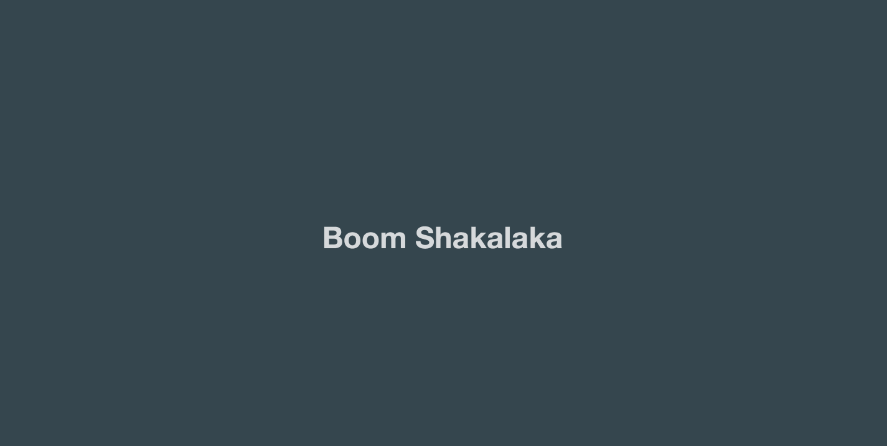

Continuous Integration | Angular CLI + Firebase + Travis CI
After completing the first step of building your application, the next thing most of us do is pick a hosting platform (like Github Pages) and deploy it. This is awesome, but we always need to make sure to deploy a newer build every time we update our app. We also need to run any unit tests we may have and make sure they pass beforehand.
Thankfully, there are continuous integration and deployment tools that can make this process a lot simpler. This isn’t something you only need to do for large scale production applications, but even updating a small hobby project can be a lot easier if all you had to do is push to your repository and let your integration pipeline do the rest.
The breakdown
In this post, we’ll begin by creating an application from scratch using Angular CLI. We’ll then use Firebase as our hosting service and Travis CI as our continuous integration platform. By the end of this article, your workflow will look something like this:
- You push to your Github repository
- Grab a coffee
- TravisCI begins by installing all the dependencies
- The build script is run
- If your build passes, the application is deployed to Firebase
This post will not explain how you can use the CLI in detail nor show you how to actually build an Angular application. I wrote a post that explains this thoroughly so please take a look if you’re interested.
Getting Started
Let’s start by installing Angular CLI.
npm install -g @angular/cliAnd now we can create and run a new project. I’m going to call it Boom Shakalaka.
ng new boom-shakalaka
cd boom-shakalaka
ng serveIf you go to localhost:4200, you’ll see your application!

Since Travis CI easily syncs with Github, let’s create our repository.

We can now add the remote repository to our project.
git init
git add .
git commit -m "first commit"
git remote add origin https://github.com/YOUR_USERNAME/boom-shakalaka.git
git push -u origin masterFirebase
Firebase is an awesome platform that provides a number of different services that you can you use for your mobile or web application. There are two that I use quite often, the database as well as the hosting platform.
For Boom Shakalaka, we’ll only need to host it. We can do that by using the Firebase CLI, but first you’ll need to sign in, head to the console and create your project.

Once you’ve created your project, you can head to your terminal and run the following at the root of your project to set up the CLI.
npm install -g firebase-tools
firebase login
firebase initYou should see the following in your terminal.

Let’s go through each of the questions.
What Firebase CLI features do you want to setup for this folder?– Hosting- If it asks you which Firebase project do you want to associate as default, select the correct project
What file should be used for Database Rules?– Just click enter since we’ll not be using the database for our applicationWhat do you want to use as your public directory?– Type indistand hit enter (this is because when you run a build with Angular CLI, the compiled code that should be deployed is located in this directory)Configure as a single-page app?– Yep
And that’s it. Since you specified your default project, all you’ll need to do is run the following to create a production build and deploy it.
ng build --prod
firebase deploy
Now if you navigate to the URL provided, you’ll see your application!

In your terminal, run the following command to get your token (you’ll be asked to authenticate). We’ll need it in a bit.
firebase login:ci
Travis CI
Travis CI is a continuous integration platform that you can use with your Github projects. Once synced with your repository, it will build the project and run your tests every time you push to your branch (or merge a pull request).
Sign in to Travis CI with your Github account and you should see a list of your repositories.

Check the one you wish to sync and click the little cog icon to enter its settings.

You can see that I have Build Pushes and Build Pull Requests turned ON. This means that anytime I push directly to this repository or merge a pull-request, Travis CI will trigger a build.
You also need to add an environment variable for your token. Let’s name it FIREBASE_TOKEN and copy the token we just generated in our terminal.
Now the final thing we need to do is set up our configurations, which we can do by creating a .travis.yml file at the root of our project (notice how I also have Build only if .travis.yml is present turned ON).
#.travis.yml
language: node_js
node_js:
- "6.9"
branches:
only:
- master
before_script:
- npm install -g firebase-tools
- npm install -g @angular/cli
script:
- ng build --prod
after_success:
- firebase deploy --token $FIREBASE_TOKEN
notifications:
email:
on_failure: change
on_success: changeThe docs do a great job explaining the build lifecycle, but I’ll quickly summarize these configurations.
before_script: These are commands that run before the build step. Here I just install firebase-tools and angular-cli.
script: The build step where we run a production build for our application.
If you needed to, you can have multiple commands here and they will fire in order. A good example would be generating a service worker after every build.
after_success: These are additional commands that run if the build succeeds. In our case, we just deploy to Firebase.
If you have multiple Firebase projects/aliases set up, you can specify firebase use YOUR_PROJECT_ALIAS before the deploy command to specify which project you want to deploy.
notifications: You can specify the type of notifications you would like and when to receive them. More info in the docs.
Unit tests
I didn’t cover tests in my configuration, but it is important to mention that Angular CLI uses Karma for it’s unit tests which run against a browser. Here’s a great article that explains how to setup your configurations to have Travis CI run unit tests on Google Chrome. Here’s another article that shows how you can have your unit and end-to-end tests run as part of your build for your Angular CLI project.
Triggering a build
Now that we have our .travis.yml file set up, I’m going to modify the application slightly to look like this.

Now all we need to do is commit and push our changes.
git add .
git commit -m "set up .travis.yml"
git push origin masterAnd that’s it! You can always take a look at your build status on your repository in Travis CI. After a few minutes, you should see your newly built application deployed. You can see mine here.
Conclusion
If you were looking to find a simple way to set up an Angular project with continuous integration, then I hope this helped . As always, please don’t hesitate to let me know if you have any questions or feedback!
If you have any questions or suggestions, feel free to open an issue!